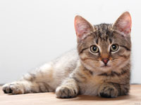
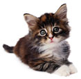

Zen Pet: Cat Supplies


Cat Supplies
At Zen Pets we pride ourselves on having one of the largest selections of healthy and
natural cat food and supplies in Portland.
Our staff recognizes the unique requirements of cats.
We offer a wide range of products to satisfy your needs.
Cat Food
Whether you're searching for a balanced, nutritious, additive-free, natural cat food because of special needs or you would like to try something different for your four- legged friend, we stock all major, high quality brands.
Including:
- Natural Pet Foods
- Innova Pet Products
- California Natural Cat Food
- Healthwise Premium Pet Food
- Mother Nature's Cat Food
- Karma Organic Food for Cats
Why not come to our Sellwood store, just 10-minutes from downtown Portland, and
check out our sales on cat food.
Cats can be finicky so our selection of both canned and
dry cat food is one of the largest in Portland, offered at a low price.
Supplies for Cats
Zen Pets stocks a large selection of cat specific supplies and treats.
We shop and stock
only the highest quality products.
Need designer cat carrier or collar?
How about a cat bed, some biscuits, a book or bowl?
Could we interest you in some cat clothes, a condo/scratching post, jewelry, shampoo, sweaters, or treats?
Popular Brand Missing?
Is there a popular brand or supply you'd like to see stocked at Zen Pets?
Fill out our Contact Form on our Contact page, call us at 1-800-CAT-N-DOG (1-800-228-6364), or drop by our Sellwood location and mention it to our friendly staff. We're happy to help.